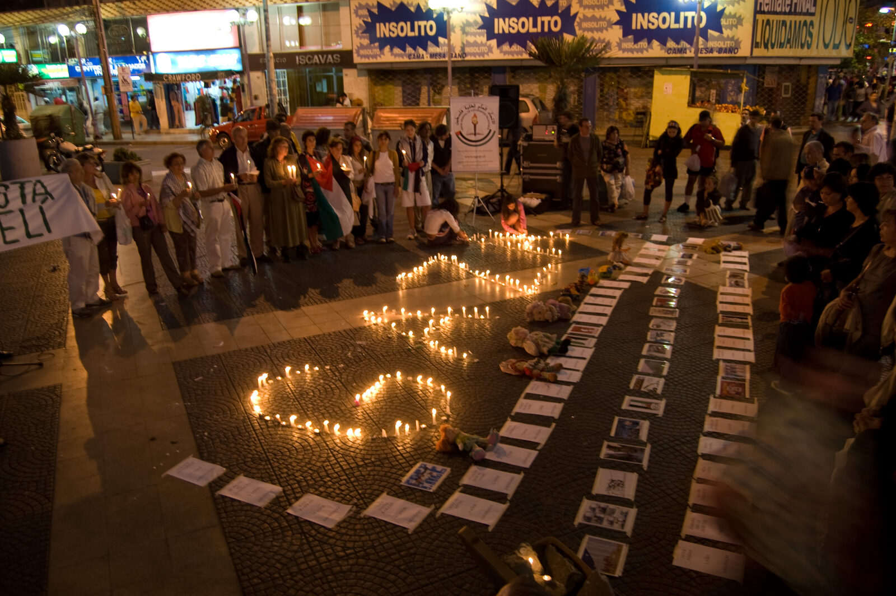
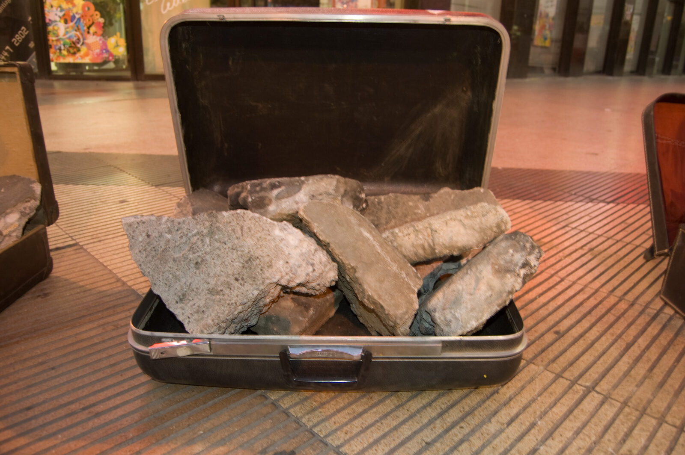
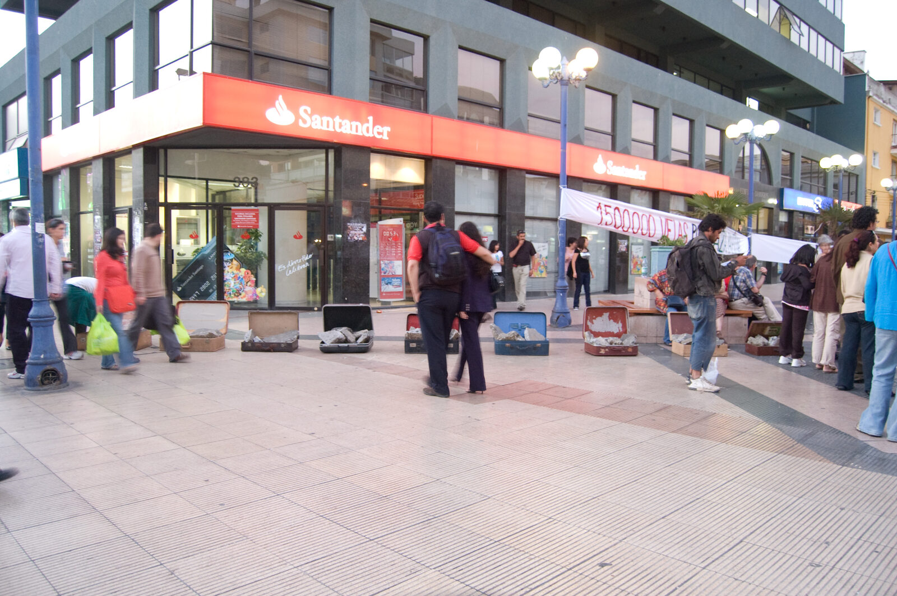
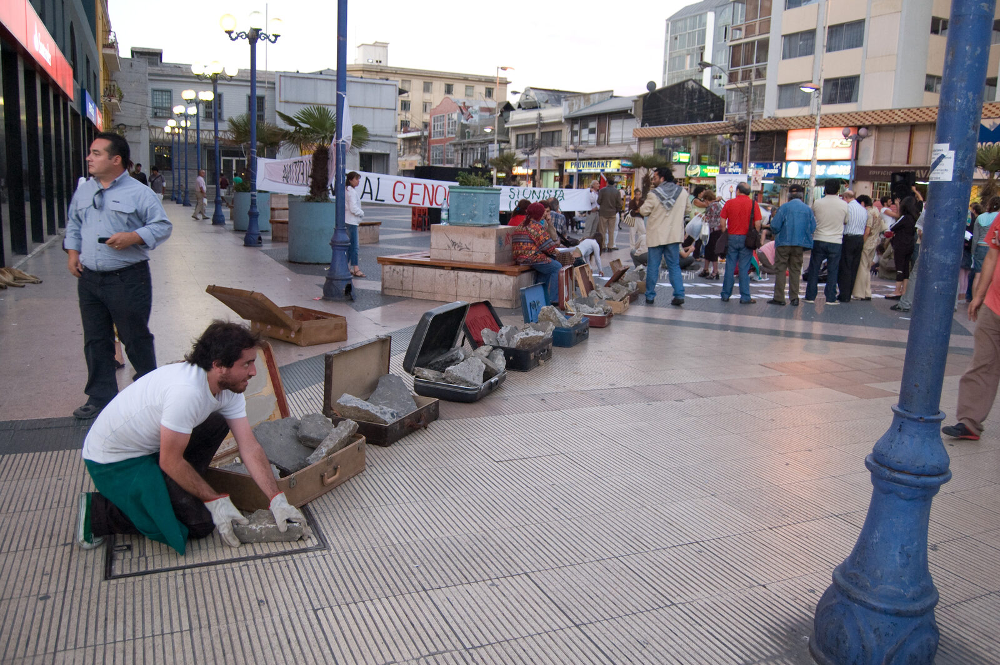
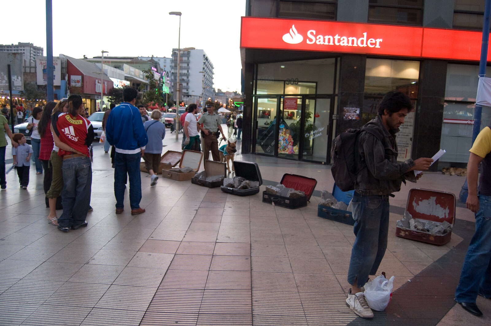
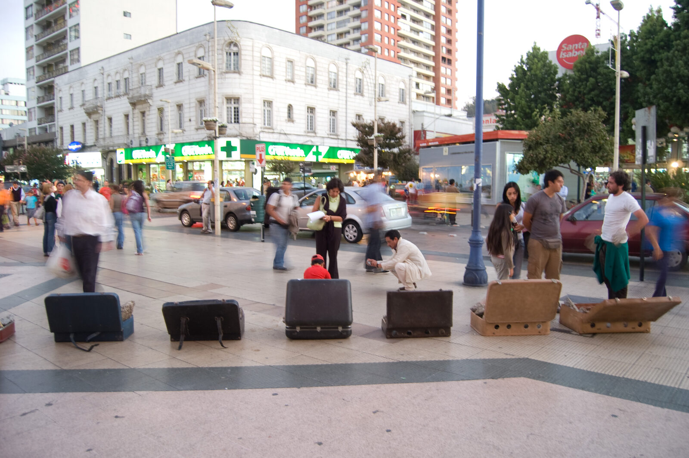

Dossier · Equipaje de Escombros
Equipaje de Escombros / Gaza
El 31 de enero de 2008, invitado por la comunidad palestina, el artista participó con una acción en el contexto de una manifestación pública realizada en la plaza María Luisa Bombal, en el centro de Viña del Mar: una velatón denominada «1.500.000 de velas por Gaza, Palestina», realizada en forma simultánea en diversos lugares del mundo en repudio al bloqueo impuesto a la población de Gaza.
Diez maletas, calle Las Heras
La acción consistió en la disposición de diez maletas de viaje en línea, en cuyo interior se exhibían trozos de hormigón extraídos de la destrucción y remodelación de la calle Las Heras, en Valparaíso. Es, en rigor, el cruce de dos acciones: el traslado de esos escombros, a través de las maletas, desde la calle Las Heras hasta el centro de Viña del Mar, donde quedaron apilados y abandonados en un rincón de la plaza una vez terminada la manifestación; y, en el contexto de la velatón —realizada la misma madrugada en que milicianos de Hamas dinamitaron en varios puntos los muros de hormigón y metal que Israel había construido antes de evacuar Gaza—, la referencia a ese muro destrozado, abierto, con la frontera penetrada, como metáfora general de los muros que se levantan y los que se destruyen. Las maletas, objetos de viaje y de exilio, se vuelven equipaje de una identidad desplazada: contenedoras de una situación de huida y de incertidumbre respecto a la tierra natal y a la propia memoria.






33°01′S · 71°33′O